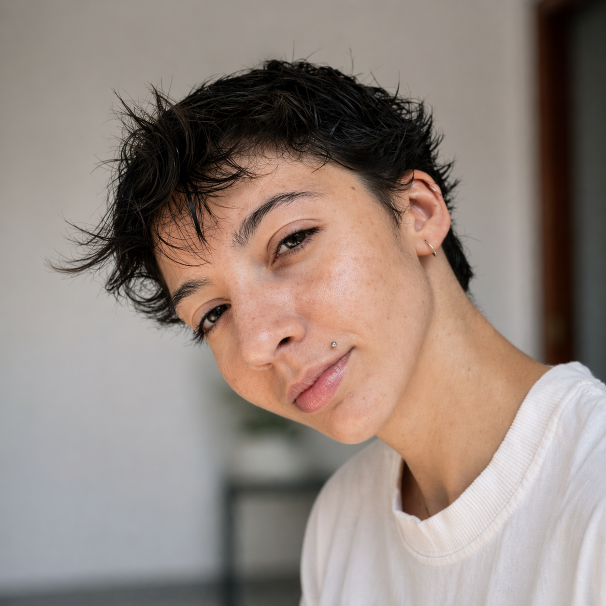

Sou o May, profissional de tecnologia com experiência em infraestrutura, suporte e ambientes corporativos. Ao longo da minha trajetória, tive a oportunidade de atuar com empresas de diferentes segmentos desde comunicação até segurança patrimonial, o que me trouxe uma vivência ampla em diferentes cenários, desafios e tecnologias.
Sempre fui movido pela curiosidade de entender como as coisas realmente funcionam não só resolver problemas, mas compreender o que está por trás deles e como torná-los mais simples e eficientes no dia a dia.
Além da tecnologia, também trago um lado criativo e artístico que influencia diretamente a forma como penso e construo soluções. Acredito muito na importância de uma comunicação mais humana, sendo capaz de traduzir o técnico de forma clara e acessível, para que qualquer pessoa consiga entender.
Com o tempo, fui percebendo que tecnologia vai além de manter sistemas funcionando. Envolve também a experiência de quem utiliza essas soluções, e foi isso que despertou meu interesse por desenvolvimento e outras áreas que complementam essa visão.
Hoje, sigo ampliando meus conhecimentos, explorando desenvolvimento e buscando conectar diferentes áreas da tecnologia. Mais do que escolher um único caminho, acredito em construir uma jornada completa — unindo técnica, curiosidade e propósito.

Conheça meus últimos projetos
Ver meu currículo